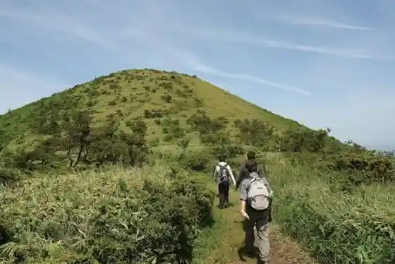
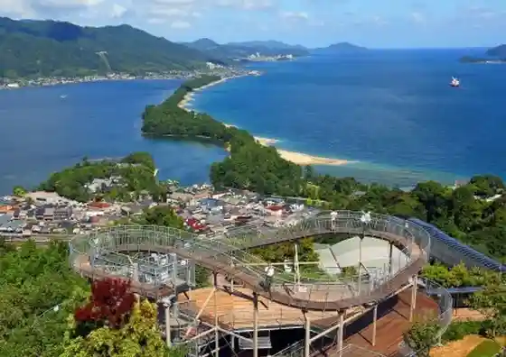

Miyazu Baths Rayura Onsen
Miyazu, Kyoto · 03-6627-4666 · Official / source link
Chie Kurabe
Miyazu, Kyoto · 0772-22-4554 · Official / source link

Shiei Amanohashidate Chushajo
Miyazu, Kyoto · 0772-22-4179 · Official / source link

Oeyama
Miyazu, Kyoto · 0773-62-2506 · Official / source link

Amanohashidate Byu Land
Miyazu, Kyoto · 0772-22-5304 · Official / source link

Amanohashidate Tourism Association
Miyazu, Kyoto · 0772-22-8030 · Official / source link
Motoise Kago Shrine
Miyazu, Kyoto · 0772-27-0006 · Official / source link
Miyazu Machinaka Chiiki Shinko Kyoten Shisetsu
Miyazu, Kyoto · 0772-25-1382 · Official / source link
Roadside Station Umi no Kyoto Miyazu
Miyazu, Kyoto · Official / source link
Chie Baths (Amanohashidate Onsen Sotoyu Shisetsu)
Miyazu, Kyoto · 0772-22-1515 · Official / source link
Chie no Mochi
Miyazu, Kyoto · Official / source link
Kin Hiki Falls
Miyazu, Kyoto · 0772-22-8030 · Official / source link
Amanohashidate
Miyazu, Kyoto · 0772-22-8030 · Official / source link
Tango Yura Beach
Miyazu, Kyoto · 0772-22-8030 · Official / source link
Miyazu Rekishi no Kan
Miyazu, Kyoto · 0772-20-3390 · Official / source link
Nariai Tera
Miyazu, Kyoto · 0772-27-0018 · Official / source link
Miyazu Onsen Pinto Yu
Miyazu, Kyoto · 0772-22-8030 · Official / source link
Umi no Kyoto Amanohashidate, Ine Furiipasu 2days
Miyazu, Kyoto · 0772-42-0323 · Official / source link
Iso Shimizu
Miyazu, Kyoto · Official / source link
Merukyuru Kyoto Miyazu Resort & Supa (Kyu : Hotel & Rizotsu Kyoto Miyazu)
Miyazu, Kyoto · 0120-993-130 · Official / source link
Kasamatsu Park
Miyazu, Kyoto · 0772-27-0032 · Official / source link
Kyotofuritsu Seishonen Kaiyo Center (Mariinpia)
Miyazu, Kyoto · 0772-22-0501 · Official / source link
Miyazu Amanohashidate Ryoshi Town Totomato
Miyazu, Kyoto · 0772-25-9006 · Official / source link
Yu Rayura Onsen Sato
Miyazu, Kyoto · 0772-22-8030 · Official / source link
Chion Tera
Miyazu, Kyoto · 0772-22-2553 · Official / source link
Matsu Gin
Miyazu, Kyoto · 0772-22-3285 · Official / source link
Chirimen Tonya
Miyazu, Kyoto · 0772-25-1594 · Official / source link
Amanohashidate Onsen
Miyazu, Kyoto · 0772-22-8030 · Official / source link
Hashidate Kanko Biru Maunteiinmausu
Miyazu, Kyoto · 0772-22-3668 · Official / source link
Hashidate Daimaru Main Shop
Miyazu, Kyoto · 0772-22-4151 · Official / source link
Amanohashidate Beach
Miyazu, Kyoto · 0772-22-8030 · Official / source link
Amanohashidate Fuchu Beach
Miyazu, Kyoto · 0772-22-8030 · Official / source link
Hashidate Chaya
Miyazu, Kyoto · 0772-22-3363 · Official / source link
Kasamatsu Village
Miyazu, Kyoto · 0772-27-1605 · Official / source link
Teichiami Experience
Miyazu, Kyoto · 0772-28-9480 · Official / source link
Kensho Tera
Miyazu, Kyoto · 0772-22-4020 · Official / source link
Katorikku Tango Kyokai Miyazu Seido
Miyazu, Kyoto · 0772-22-3127 · Official / source link
Amanohashidate Akuteibitei Center
Miyazu, Kyoto · 090-9047-5896 · Official / source link
Tai Miyazu Yottohaba
Miyazu, Kyoto · 0772-22-6776 · Official / source link
Hotel Kitano Ya
Miyazu, Kyoto · 0772-22-4126 · Official / source link
Monju So
Miyazu, Kyoto · 0772-22-7111 · Official / source link
Cha Roku Bekkan
Miyazu, Kyoto · 0772-22-2177 · Official / source link
Wain to Yado Chitose
Miyazu, Kyoto · 0772-22-3268 · Official / source link
Oberuju Amanohashidate
Miyazu, Kyoto · 0772-22-0650 · Official / source link
Hashimoto Ya
Miyazu, Kyoto · 0772-22-5409 · Official / source link
Kyotofuritsu Tango Umi to Hoshi no Mie Ru Oka Park
Miyazu, Kyoto · 0772-28-9111 · Official / source link
Maruyasu
Miyazu, Kyoto · 0772-22-2310 · Official / source link
Amanohashidate Hotel
Miyazu, Kyoto · 0772-22-4111 · Official / source link
Amanohashidate Wain
Miyazu, Kyoto · 0772-27-2222 · Official / source link
Miyazu Odori
Miyazu, Kyoto · Official / source link
Kyotofuritsu Tango Local History Museum / Kyu Nagashima Ie House / Tango Kokubunji Ato (Kyukanchu)
Miyazu, Kyoto · 0772-27-0230 · Official / source link
Tango Amanohashidate Ine Furii
Miyazu, Kyoto · 0772-42-0323 · Official / source link
Hakurei Shuzo
Miyazu, Kyoto · 0772-26-0001 · Official / source link
Nariai Kannon Onsen
Miyazu, Kyoto · 0772-27-0005 · Official / source link
Jibiki Ki Amiryo Experience
Miyazu, Kyoto · 0772-27-0190 · Official / source link
Monju So Shoro Tei
Miyazu, Kyoto · 0772-22-2151 · Official / source link
Miyazu Amanohashidate Yusuhosuteru
Miyazu, Kyoto · 0772-27-0121 · Official / source link
(Inori) (Garasha Fujin) Zo
Miyazu, Kyoto · 0772-45-1625 · Official / source link
Akiko no Heya
Miyazu, Kyoto · 0772-22-2101 · Official / source link
O Yado Tsui Hashi Ro
Miyazu, Kyoto · 0772-22-2101 · Official / source link
Kyu Mikami Ie House
Miyazu, Kyoto · 0772-22-7529 · Official / source link
Shiei Miyazu Ekimae Chushajo
Miyazu, Kyoto · Official / source link